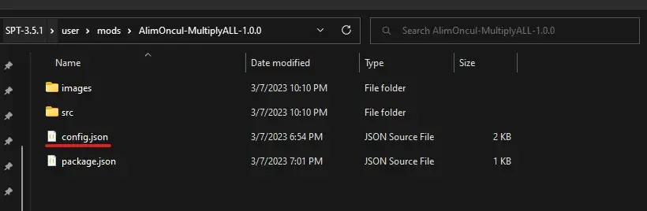

Multiply ALL
- Downloads
- 30,553
- Favourites
- 0
Multiply ALL
This mod dynamically multiplies the values listed in config and doesn’t change any files in the database. The benefit of this you don’t need to do anything after each SPT release, this mod will do everything for you. Just change the multipliers inside of config.json.
Features:
- Daily & Weekly & Daily(Scav) Experience Multiplier (Disabled by default, change from config.json)
- Daily & Weekly & Daily(Scav) Money Reward Multiplier (Disabled by default, change from config.json)
- Daily & Weekly & Daily(Scav) Reputation Reward Multiplier (Disabled by default, change from config.json)
- Quest Experience Multiplier (Disabled by default, change from config.json)
- Quest Reputation Multiplier (Disabled by default, change from config.json)
- Item Examination Experience Multiplier (Disabled by default, change from config.json)
- Raid Exit Experience Multiplier (Disabled by default, change from config.json)
- Skill Progression Multiplier (Disabled by default, change from config.json)
- Weapon Skill Progression Multiplier (Disabled by default, change from config.json)
- Static & Loose Loot Multiplier (Disabled by default, change from config.json)
- Flea Market Offer Count Multiplier added (Disabled by default, change from config.json)
- Fence Car Extract Reputation Multiplier (Disabled by default, change from config.json)
- Fence Scav Extract Reputation Multiplier (Disabled by default, change from config.json)
- Magazine Load/Unload Speed Multiplier (Disabled by default, change from config.json)
- Stash Size Multiplier (Disabled by default, change from config.json)
- Crafting Speed Multiplier (Disabled by default, change from config.json)
- Fuel Consumption Rate Multiplier (Disabled by default, change from config.json)
- Kill Experience Multiplier (Disabled by default, change from config.json)
Configs:
Open up MOD_FOLDER/config.json and you will see the values and descriptions. Don’t go too much of course I don’t know the limit but if you want to disable an option just write down 1 for the value. If the value is 1 it doesn’t change anything for that part.
How to Install:
Download the release zip and unzip it. Copy the content of the unzip folder (AlimOncul-MultiplyALL-X.X.X) and paste it into your SPT_FOLDER/user/mods. Final result should look like this:

Version
5.0.0
Please backup your profile before testing this
Please backup your profile before testing this
Please backup your profile before testing this
Compatibility update for 3.10.X
- Added unheard edition stash size multiplier
- Fix reputation reward check
Version
4.0.1
Compatibility update for 3.9.1
Removing update controller
Version
4.0.0
Compatibility update for 3.9,X
Version
3.0.2
Compatibility update for 3.8.3
Version
3.0.1
Compatibility update for 3.8.1
Version
3.0.0
Compatibility update for 3.8.0
Version
2.1.0
Compatibility update for 3.7.4